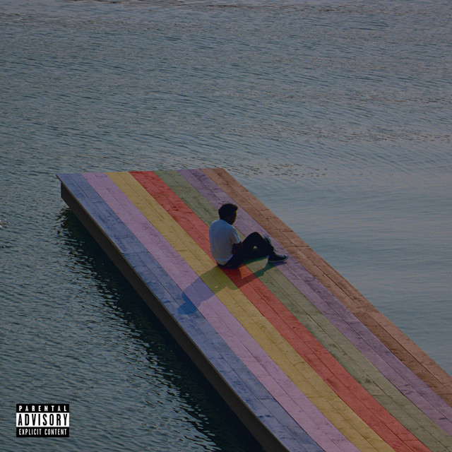

A l b u m s
Future Nostalgia
Future Nostalgia is the second studio album by Albanian singer Dua Lipa.
Writing for DIY, Elly Watson wrote "this album has proved: Dua will be going down in pop history as one of the best". It was nominated for 6 Grammy Awards and won one. It won for Best Pop Vocal Album. She is considered to have revived 80s music and disco/house genre.
My favorite songs:
- Levitating
- Physical
- Love again
The Melodic Blue

The Melodic Blue is the debut studio album by American rapper and record producer Baby Keem.
It was released on September 10, 2021. It has been nominated for a few Grammys and won Grammy Award for Best Rap Performance, marking Keem's first Grammy Award.
My favorite songs:
- 16
- South Africa
- Trademark USA
Graduation
Graduation is the third studio album by American rapper and producer Kanye West, released on September 11, 2007.
Graduation was named to year-end lists for 2007 by multiple publications.
USA Today ranked it as the best album of the year, with the staff lauding the "musical and thematic variety" as well as "its articulate and witty rhyming".
My favorite songs:
- Homecoming
- Everything I am
- Good Morning